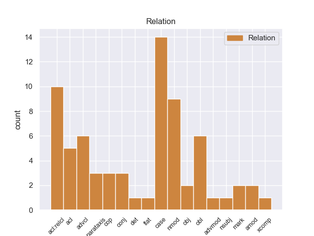
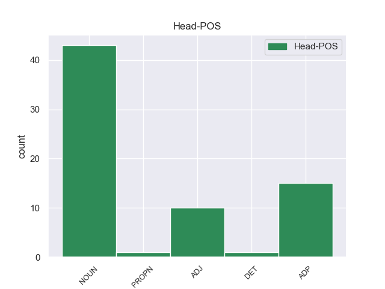
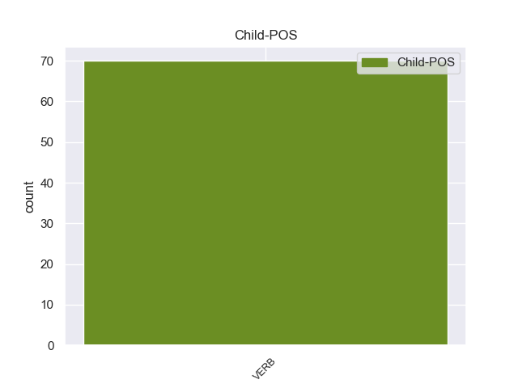

Distribution of features within this leaf



Agreement Rules sorted by frequency.
When the head token is NOUN and the dependent token is VERB.
1 Ayudemos _ _ _ _ 0 _ _ _
2 a _ _ _ _ 0 _ _ _
3 esta _ _ _ _ 0 _ _ _
4 intrépida _ _ _ _ 0 _ _ _
5 empresaria _ _ _ _ 0 _ _ _
6 , _ _ _ _ 0 _ _ _
7 tan _ _ _ _ 0 _ _ _
8 sobrada _ _ _ _ 0 _ _ _
9 de _ _ _ _ 0 _ _ _
10 clientes clientes NOUN _ Gender=Fem|Number=Sing 0 _ _ _
11 que _ _ _ _ 0 _ _ _
12 incluso incluso VERB _ Gender=Fem|Number=Sing 10 case _ _
13 le _ _ _ _ 0 _ _ _
14 molestan _ _ _ _ 0 _ _ _
15 y _ _ _ _ 0 _ _ _
16 perturban _ _ _ _ 0 _ _ _
17 su _ _ _ _ 0 _ _ _
18 paz _ _ _ _ 0 _ _ _
19 . _ _ _ _ 0 _ _ _
When the head token is NOUN and the dependent token is VERB. and the head token is ADP and the dependent token is VERB.
1 El _ _ _ _ 0 _ _ _
2 gerente _ _ _ _ 0 _ _ _
3 de _ _ _ _ 0 _ _ _
4 el _ _ _ _ 0 _ _ _
5 Hospital _ _ _ _ 0 _ _ _
6 de _ _ _ _ 0 _ _ _
7 Benasque _ _ _ _ 0 _ _ _
8 , _ _ _ _ 0 _ _ _
9 Jorge _ _ _ _ 0 _ _ _
10 Mayoral _ _ _ _ 0 _ _ _
11 , _ _ _ _ 0 _ _ _
12 manifestó manifestó VERB _ Gender=Fem|Number=Sing 29 amod _ _
13 ayer _ _ _ _ 0 _ _ _
14 su _ _ _ _ 0 _ _ _
15 " _ _ _ _ 0 _ _ _
16 satisfacción _ _ _ _ 0 _ _ _
17 " _ _ _ _ 0 _ _ _
18 por _ _ _ _ 0 _ _ _
19 la _ _ _ _ 0 _ _ _
20 reapertura _ _ _ _ 0 _ _ _
21 , _ _ _ _ 0 _ _ _
22 aunque _ _ _ _ 0 _ _ _
23 recordó _ _ _ _ 0 _ _ _
24 las _ _ _ _ 0 _ _ _
25 pérdidas _ _ _ _ 0 _ _ _
26 que _ _ _ _ 0 _ _ _
27 les _ _ _ _ 0 _ _ _
28 ha _ _ _ _ 0 _ _ _
29 originado originado ADP _ Gender=Fem|Number=Sing 0 _ _ _
30 este _ _ _ _ 0 _ _ _
31 prolongado _ _ _ _ 0 _ _ _
32 cierre _ _ _ _ 0 _ _ _
33 que _ _ _ _ 0 _ _ _
34 ha _ _ _ _ 0 _ _ _
35 coincidido _ _ _ _ 0 _ _ _
36 con _ _ _ _ 0 _ _ _
37 las _ _ _ _ 0 _ _ _
38 fiestas _ _ _ _ 0 _ _ _
39 de _ _ _ _ 0 _ _ _
40 Carnaval _ _ _ _ 0 _ _ _
41 y _ _ _ _ 0 _ _ _
42 la _ _ _ _ 0 _ _ _
43 " _ _ _ _ 0 _ _ _
44 semana _ _ _ _ 0 _ _ _
45 blanca _ _ _ _ 0 _ _ _
46 " _ _ _ _ 0 _ _ _
47 . _ _ _ _ 0 _ _ _
When the head token is NOUN and the dependent token is VERB. and the head token is ADP and the dependent token is VERB. and the head token is ADJ and the dependent token is VERB.
1 No _ _ _ _ 0 _ _ _
2 obstante _ _ _ _ 0 _ _ _
3 el _ _ _ _ 0 _ _ _
4 sistema _ _ _ _ 0 _ _ _
5 de _ _ _ _ 0 _ _ _
6 explotación _ _ _ _ 0 _ _ _
7 netamente _ _ _ _ 0 _ _ _
8 extensivo _ _ _ _ 0 _ _ _
9 en _ _ _ _ 0 _ _ _
10 zonas _ _ _ _ 0 _ _ _
11 agrestes _ _ _ _ 0 _ _ _
12 y _ _ _ _ 0 _ _ _
13 mal _ _ _ _ 0 _ _ _
14 comunicadas comunicadas ADJ _ Gender=Fem|Number=Sing 0 _ _ _
15 no _ _ _ _ 0 _ _ _
16 favorecen favorecen VERB _ Gender=Fem|Number=Sing 14 advcl _ _
17 la _ _ _ _ 0 _ _ _
18 producción _ _ _ _ 0 _ _ _
19 de _ _ _ _ 0 _ _ _
20 leche _ _ _ _ 0 _ _ _
21 ni _ _ _ _ 0 _ _ _
22 la _ _ _ _ 0 _ _ _
23 práctica _ _ _ _ 0 _ _ _
24 de _ _ _ _ 0 _ _ _
25 el _ _ _ _ 0 _ _ _
26 ordeño _ _ _ _ 0 _ _ _
27 . _ _ _ _ 0 _ _ _
When the head token is NOUN and the dependent token is VERB. and the head token is ADP and the dependent token is VERB. and the head token is ADJ and the dependent token is VERB. and the head token is PROPN and the dependent token is VERB.
1 Cuando _ _ _ _ 0 _ _ _
2 estuvieron _ _ _ _ 0 _ _ _
3 cerca _ _ _ _ 0 _ _ _
4 de _ _ _ _ 0 _ _ _
5 el _ _ _ _ 0 _ _ _
6 río _ _ _ _ 0 _ _ _
7 , _ _ _ _ 0 _ _ _
8 la _ _ _ _ 0 _ _ _
9 voz _ _ _ _ 0 _ _ _
10 les _ _ _ _ 0 _ _ _
11 ordenó _ _ _ _ 0 _ _ _
12 parar _ _ _ _ 0 _ _ _
13 en _ _ _ _ 0 _ _ _
14 el _ _ _ _ 0 _ _ _
15 Campo campo PROPN _ Gender=Masc|Number=Sing 0 _ _ _
16 de _ _ _ _ 0 _ _ _
17 Marte _ _ _ _ 0 _ _ _
18 , _ _ _ _ 0 _ _ _
19 ubicado ubicado VERB _ Gender=Masc|Number=Sing|VerbForm=Part 15 acl _ _
20 en _ _ _ _ 0 _ _ _
21 la _ _ _ _ 0 _ _ _
22 región _ _ _ _ 0 _ _ _
23 , _ _ _ _ 0 _ _ _
24 que _ _ _ _ 0 _ _ _
25 también _ _ _ _ 0 _ _ _
26 era _ _ _ _ 0 _ _ _
27 llamado _ _ _ _ 0 _ _ _
28 Tarento _ _ _ _ 0 _ _ _
29 . _ _ _ _ 0 _ _ _
When the head token is NOUN and the dependent token is VERB. and the head token is ADP and the dependent token is VERB. and the head token is ADJ and the dependent token is VERB. and the head token is PROPN and the dependent token is VERB. and the head token is DET and the dependent token is VERB.
1 Fui _ _ _ _ 0 _ _ _
2 el _ _ _ _ 0 _ _ _
3 año _ _ _ _ 0 _ _ _
4 pasado _ _ _ _ 0 _ _ _
5 y _ _ _ _ 0 _ _ _
6 de _ _ _ _ 0 _ _ _
7 la _ _ _ _ 0 _ _ _
8 ruta _ _ _ _ 0 _ _ _
9 de _ _ _ _ 0 _ _ _
10 los _ _ _ _ 0 _ _ _
11 7 _ _ _ _ 0 _ _ _
12 lagos _ _ _ _ 0 _ _ _
13 fue _ _ _ _ 0 _ _ _
14 el el DET _ Definite=Def|Gender=Masc|Number=Sing|PronType=Art 0 _ _ _
15 que _ _ _ _ 0 _ _ _
16 más _ _ _ _ 0 _ _ _
17 me _ _ _ _ 0 _ _ _
18 gusto gusto VERB _ Gender=Masc|Number=Sing|VerbForm=Fin 14 acl:relcl _ SpaceAfter=No
19 , _ _ _ _ 0 _ _ _
20 en _ _ _ _ 0 _ _ _
21 el _ _ _ _ 0 _ _ _
22 mes _ _ _ _ 0 _ _ _
23 de _ _ _ _ 0 _ _ _
24 enero _ _ _ _ 0 _ _ _
25 y _ _ _ _ 0 _ _ _
26 febrero _ _ _ _ 0 _ _ _
27 te _ _ _ _ 0 _ _ _
28 dan _ _ _ _ 0 _ _ _
29 la _ _ _ _ 0 _ _ _
30 cena _ _ _ _ 0 _ _ _
31 gratis _ _ _ _ 0 _ _ _
32 y _ _ _ _ 0 _ _ _
33 podes _ _ _ _ 0 _ _ _
34 hacer _ _ _ _ 0 _ _ _
35 un _ _ _ _ 0 _ _ _
36 montón _ _ _ _ 0 _ _ _
37 de _ _ _ _ 0 _ _ _
38 excursiones _ _ _ _ 0 _ _ _
39 organisadas _ _ _ _ 0 _ _ _
40 en _ _ _ _ 0 _ _ _
41 el _ _ _ _ 0 _ _ _
42 mismo _ _ _ _ 0 _ _ _
43 hostel _ _ _ _ 0 _ _ _
44 . _ _ _ _ 0 _ _ _
Disagree Examples:
1 Era _ _ _ _ 0 _ _ _
2 un _ _ _ _ 0 _ _ _
3 centro centro NOUN _ Gender=Masc|Number=Sing 0 _ _ _
4 chií _ _ _ _ 0 _ _ _
5 que _ _ _ _ 0 _ _ _
6 pasó _ _ _ _ 0 _ _ _
7 horas _ _ _ _ 0 _ _ _
8 bajas _ _ _ _ 0 _ _ _
9 en _ _ _ _ 0 _ _ _
10 la _ _ _ _ 0 _ _ _
11 época _ _ _ _ 0 _ _ _
12 ayubí _ _ _ _ 0 _ _ _
13 ( _ _ _ _ 0 _ _ _
14 suní _ _ _ _ 0 _ _ _
15 ) _ _ _ _ 0 _ _ _
16 hasta _ _ _ _ 0 _ _ _
17 que _ _ _ _ 0 _ _ _
18 los _ _ _ _ 0 _ _ _
19 mamelucos _ _ _ _ 0 _ _ _
20 la _ _ _ _ 0 _ _ _
21 volvieron volver VERB _ Mood=Ind|Number=Plur|Person=3|Tense=Past|VerbForm=Fin 3 advcl _ _
22 a _ _ _ _ 0 _ _ _
23 impulsar _ _ _ _ 0 _ _ _
24 y _ _ _ _ 0 _ _ _
25 es _ _ _ _ 0 _ _ _
26 desde _ _ _ _ 0 _ _ _
27 aquella _ _ _ _ 0 _ _ _
28 época _ _ _ _ 0 _ _ _
29 que _ _ _ _ 0 _ _ _
30 goza _ _ _ _ 0 _ _ _
31 de _ _ _ _ 0 _ _ _
32 renombre _ _ _ _ 0 _ _ _
33 . _ _ _ _ 0 _ _ _
1 El _ _ _ _ 0 _ _ _
2 mantel _ _ _ _ 0 _ _ _
3 estaba _ _ _ _ 0 _ _ _
4 sucio sucio ADJ _ Gender=Masc|Number=Sing 0 _ _ _
5 de _ _ _ _ 0 _ _ _
6 migas _ _ _ _ 0 _ _ _
7 de _ _ _ _ 0 _ _ _
8 pan _ _ _ _ 0 _ _ _
9 , _ _ _ _ 0 _ _ _
10 el _ _ _ _ 0 _ _ _
11 trato _ _ _ _ 0 _ _ _
12 deja _ _ _ _ 0 _ _ _
13 mucho _ _ _ _ 0 _ _ _
14 que _ _ _ _ 0 _ _ _
15 desear _ _ _ _ 0 _ _ _
16 , _ _ _ _ 0 _ _ _
17 antes _ _ _ _ 0 _ _ _
18 de _ _ _ _ 0 _ _ _
19 servir _ _ _ _ 0 _ _ _
20 comida _ _ _ _ 0 _ _ _
21 , _ _ _ _ 0 _ _ _
22 deberian deberiar VERB _ Mood=Ind|Number=Plur|Person=3|Tense=Pres|VerbForm=Fin 4 parataxis _ _
23 ofrecer _ _ _ _ 0 _ _ _
24 la _ _ _ _ 0 _ _ _
25 con _ _ _ _ 0 _ _ _
26 un _ _ _ _ 0 _ _ _
27 poco _ _ _ _ 0 _ _ _
28 de _ _ _ _ 0 _ _ _
29 educacion _ _ _ _ 0 _ _ _
30 . _ _ _ _ 0 _ _ _
1 Dentro _ _ _ _ 0 _ _ _
2 de _ _ _ _ 0 _ _ _
3 el _ _ _ _ 0 _ _ _
4 casco _ _ _ _ 0 _ _ _
5 urbano _ _ _ _ 0 _ _ _
6 de _ _ _ _ 0 _ _ _
7 esta _ _ _ _ 0 _ _ _
8 población _ _ _ _ 0 _ _ _
9 cabe _ _ _ _ 0 _ _ _
10 destacar _ _ _ _ 0 _ _ _
11 como _ _ _ _ 0 _ _ _
12 construcción _ _ _ _ 0 _ _ _
13 más _ _ _ _ 0 _ _ _
14 relevante _ _ _ _ 0 _ _ _
15 la _ _ _ _ 0 _ _ _
16 iglesia iglesia NOUN _ Gender=Fem|Number=Sing 0 _ _ _
17 parroquial _ _ _ _ 0 _ _ _
18 de _ _ _ _ 0 _ _ _
19 San _ _ _ _ 0 _ _ _
20 Miguel _ _ _ _ 0 _ _ _
21 , _ _ _ _ 0 _ _ _
22 construida _ _ _ _ 0 _ _ _
23 en _ _ _ _ 0 _ _ _
24 1723 _ _ _ _ 0 _ _ _
25 , _ _ _ _ 0 _ _ _
26 en _ _ _ _ 0 _ _ _
27 la _ _ _ _ 0 _ _ _
28 cual _ _ _ _ 0 _ _ _
29 se _ _ _ _ 0 _ _ _
30 conservan conservar VERB _ Mood=Ind|Number=Plur|Person=3|Tense=Pres|VerbForm=Fin 16 acl:relcl _ _
31 valiosos _ _ _ _ 0 _ _ _
32 retablos _ _ _ _ 0 _ _ _
33 de _ _ _ _ 0 _ _ _
34 los _ _ _ _ 0 _ _ _
35 siglos _ _ _ _ 0 _ _ _
36 XV _ _ _ _ 0 _ _ _
37 y _ _ _ _ 0 _ _ _
38 XVI _ _ _ _ 0 _ _ _
39 . _ _ _ _ 0 _ _ _
1 Por _ _ _ _ 0 _ _ _
2 desgracia _ _ _ _ 0 _ _ _
3 , _ _ _ _ 0 _ _ _
4 debe _ _ _ _ 0 _ _ _
5 primero _ _ _ _ 0 _ _ _
6 bajar _ _ _ _ 0 _ _ _
7 a _ _ _ _ 0 _ _ _
8 las _ _ _ _ 0 _ _ _
9 instalaciones _ _ _ _ 0 _ _ _
10 de _ _ _ _ 0 _ _ _
11 seguridad _ _ _ _ 0 _ _ _
12 para _ _ _ _ 0 _ _ _
13 poder _ _ _ _ 0 _ _ _
14 tener _ _ _ _ 0 _ _ _
15 acceso _ _ _ _ 0 _ _ _
16 a _ _ _ _ 0 _ _ _
17 los _ _ _ _ 0 _ _ _
18 pisos piso NOUN _ Gender=Masc|Number=Plur 0 _ _ _
19 superiores _ _ _ _ 0 _ _ _
20 , _ _ _ _ 0 _ _ _
21 donde _ _ _ _ 0 _ _ _
22 está estar VERB _ Mood=Ind|Number=Sing|Person=3|Tense=Pres|VerbForm=Fin 18 acl:relcl _ _
23 el _ _ _ _ 0 _ _ _
24 laboratorio _ _ _ _ 0 _ _ _
25 de _ _ _ _ 0 _ _ _
26 Hargreave _ _ _ _ 0 _ _ _
27 . _ _ _ _ 0 _ _ _
1 Las _ _ _ _ 0 _ _ _
2 temperaturas _ _ _ _ 0 _ _ _
3 suelen soler VERB _ Mood=Ind|Number=Plur|Person=3|Tense=Pres|VerbForm=Fin 4 cop _ _
4 máximo máximo ADJ _ Degree=Sup|Gender=Masc|Number=Sing 0 _ _ _
5 en _ _ _ _ 0 _ _ _
6 julio _ _ _ _ 0 _ _ _
7 , _ _ _ _ 0 _ _ _
8 el _ _ _ _ 0 _ _ _
9 intenso _ _ _ _ 0 _ _ _
10 frío _ _ _ _ 0 _ _ _
11 de _ _ _ _ 0 _ _ _
12 el _ _ _ _ 0 _ _ _
13 invierno _ _ _ _ 0 _ _ _
14 es _ _ _ _ 0 _ _ _
15 en _ _ _ _ 0 _ _ _
16 noviembre _ _ _ _ 0 _ _ _
17 , _ _ _ _ 0 _ _ _
18 y _ _ _ _ 0 _ _ _
19 establece _ _ _ _ 0 _ _ _
20 la _ _ _ _ 0 _ _ _
21 primavera _ _ _ _ 0 _ _ _
22 en _ _ _ _ 0 _ _ _
23 torno _ _ _ _ 0 _ _ _
24 a _ _ _ _ 0 _ _ _
25 marzo _ _ _ _ 0 _ _ _
26 . _ _ _ _ 0 _ _ _